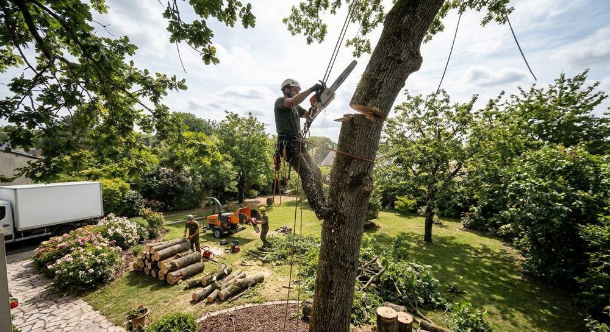

Terrasses
Une terrasse bien placée prolonge la maison : orientation, matériau et niveaux se choisissent avec vous.
Arbres, pierre, bois, pelouse : les travaux d'un jardin se préparent ensemble. Voici les domaines dans lesquels Arbirisculpture N.L. peut intervenir.



Un arbre est souvent l'élément le plus ancien d'un jardin. Taille, élagage, réduction : l'intervention se décide sur place, en fonction de l'arbre, de son environnement et de ce que vous attendez de lui.
Un jardin se pratique autant qu'il se regarde. Ces trois types d'ouvrages en dessinent les usages.
Une terrasse bien placée prolonge la maison : orientation, matériau et niveaux se choisissent avec vous.

Dalles, pavés ou autre revêtement : un tracé simple, durable et agréable à parcourir.

Pierre naturelle, soutènement, marches : la maçonnerie paysagère qui structure un terrain en pente.
Création terminée, le travail continue : pelouse, massifs, taille des haies. Un entretien régulier évite les gros chantiers de remise en état.
La fréquence et le contenu des passages se définissent avec vous, selon la taille du jardin et vos envies.
Pas besoin de plan précis. Quelques éléments suffisent pour démarrer la conversation.